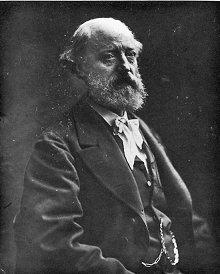

Eugène
VIOLLET le DUC

|
Eugène VIOLLET le DUC |
|
 Eugène VIOLLET le DUC
photographié par Nadar.
27 janvier 1814 : naissance à Paris, au numéro 1. de la rue Chabanais.
1834 : nommé professeur suppléant à l'École de dessin de Paris (rue de l'École de Médecine (jusqu'en 1850).
3 mai 1834 : mariage avec Élisabeth Tempier.
12 mars 1836 : départ pour un voyage d'une année et demie en Italie afin d'assurer sa formation d'autodidacte (refuse d'entrer à l'École des beaux-arts).
1838-39 : parcours la France carnet de croquis en main.
1839 : chargé par Prosper Mérimée de la restauration de l'abbatiale Sainte-Madeleine de Vézelay, qui menace ruine.
1840 : appelé par son ami, l'architecte J. B. Lassus, à la Sainte-Chapelle de Paris.
1844 : commence à collaborer, aux Annales archéologiques de Didron.
1845 : nommé, avec Lassus, architecte de Notre-Dame de Paris.
1846 : nommé architecte de la Basilique Saint-Denis.
1847 : restaure Saint-Sernin de Toulouse et la basilique de Saint-Denis.
1849 : remparts de la Cité de Carcassonne, cathédrale d'Amiens, salle synodale de Sens.
1853 : nommé inspecteur général des édifices diocésains.
1854 : entreprend l'œuvre gigantesque du Dictionnaire raisonné de l'architecture française du XIe au XVIe siècle.
1858 : introduit à la cour du second Empire par Prosper Mérimée, on lui confie la restauration du chateau de Pierrefonds, reconstruction en fait, et qui ne sera jamais vraiment achevée.
1858 : entreprend l'œuvre du Dictionnaire du mobilier.
1863 : commence les Entretiens sur l'architecture (jusqu'en 1872), thèses (2 volumes) sur le fonctionnalisme, qui témoignent de son talent de pédagogue.
1864 : nommé professeur aux Beaux-Arts par Napoléon III mais doit renoncer, face à l'opposition de l'Académie et des élèves.
1864 : début de la refection de la décoration intérieure du Château de Roquetaillade.
1866 : cathédrale de Clermont Ferrand.
1868 : achèvement de la publication du Dictionnaire raisonné de l'architecture française.
1870 : participe à la défense de Paris comme colonel du Génie.
1874 : se démet de ses charges officielles d'inspecteur général des édifices diocésains.
1874 : cathédrale de Lausanne
1875 : achèvement de la publication du Dictionnaire du mobilier.
1876 : dresse une carte du massif du Mont-Blanc.
1878 : fin de la refection de la décoration intérieure du Château de Roquetaillade.
1879 : meurt à Lausanne.
| Présentation |
 |
Accès au texte |
|
Accès au texte |